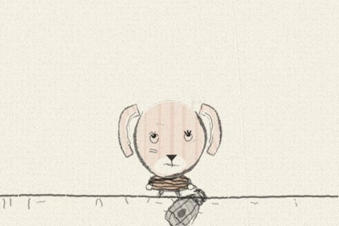
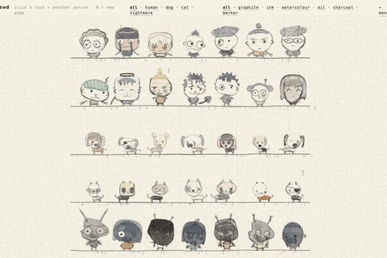
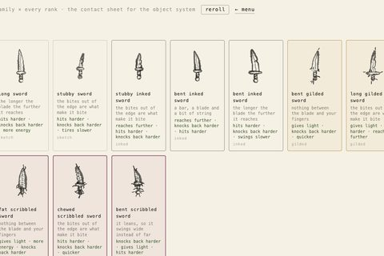
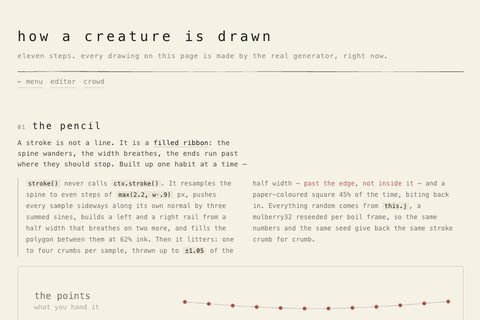

kindergrimm
characters drawn by hand, by a machine · and the games they live in
playtwo games, same weight — the menu doesn't say which is real
drawn · 2dgraphite on cream paper — the original generator

editor
one face and every parameter it has, with the recipe in JSON.
3

crowd
35 live characters at once — the variety at a glance.
4

toy shop
every object family × every rank: the contact sheet.
5

how it works
eleven live steps from one pencil stroke to a creature
that blinks.
9
voxel · 3dthe same recipe, built out of cubes
gloss · 3dglossy vinyl designer toys — solid geometry, not graphite